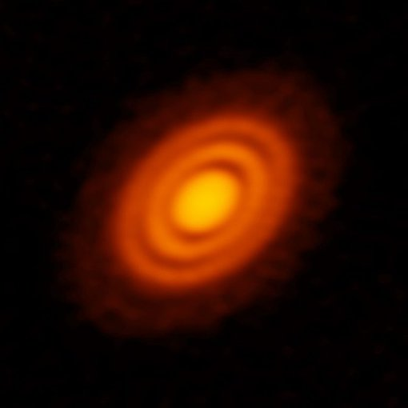
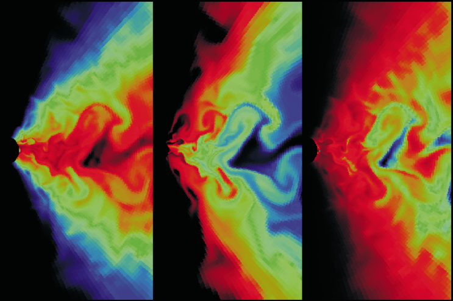
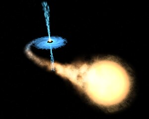

|
Xiaoyuan Yang I'm a Junior majoring in Physics at Wuhan University in Wuhan, China.
|
{kind=link}
ResearchI'm interested in Black hole accretion and protoplanetary disks. |

|
Black Hole Shadow Calculation (TDLI Hands-on Project)
Supervisor:Prof. Yosuke Mizuno Tsung Dao Lee Institute (TDLI), Shanghai Jiao Tong University Jan, 2024
•Utilized the polarized General Relativistic Radiative Transfer (GRRT) simulation code RAPTOR to construct images and movies of M87 black hole and Sgr A*.
•Investigated the properties of black hole shadows under various conditions including changes in mass, inclination, and additional relevant parameters.
|
|

|
Evolution of Protoplanetary Disks
Supervisor:Prof. Xuening Bai Department of Astronomy and Institute for Advanced Study, Tsinghua University Sep, 2023 - present •Study plasma physics for astrophysics, reproduce Bondi Accretion and Parker Wind using ODE solver, exploring steady, spherical symmetric accretion and expansion and replicate Weber-Davis Wind Solution.
•To establish semi-analytic model for evolution of protoplanetary disks based on Weber-Davis wind solution and global 2D non-ideal magnetohydrodynamic simulations of protoplanetary disks with outer truncation.
Weber&Davis Wind solution CODE: weber_davis_wind_solution.
|
|

|
Numerical Simulation of Black hole Accretion
Supervisor:Prof. Feng Yuan Shanghai Astronomical Observatory, CAS Aug, 2023 - Oct, 2023 •Reproduce hydrodynamical non-radiative accretion flows with ZEUS-2D code to investigate the properties of non-radial rotating accretion flows by introducing an anomalous stress tensor to the equations of hydrodynamics.
•Carry out a set of two-dimensional (axially symmetric) hydrodynamic numerical experiments by using a simple starting configuration and a set of well-defined boundary conditions |
|

|
Searching for Compact Object Candidates from LAMOST Time-Domain Survey
Supervisor:Prof. Wei Wang Department of Astronomy, School of Physics and Technology, Wuhan University Jul, 2022 - present •Search for single-lined spectroscopic binary systems with phase-resolved radial velocity measurements and the periodic signals from the radial velocity measurements with the Lomb-Scargle method, and fit the radial velocity curve using TheJoker. The codes are here: CODE.Notes and Code on Data Analysis : data analysis. |
Note |
|
There are some notes made during my research and study: Notes.
Note on Plasma Physics: plasma. |
Recently Read Books |
|
Think: A Compelling Introduction to Philosophy by Simon Blackburn
1984 by George Orwell |
|
This website is inspired by Jon Barron. |